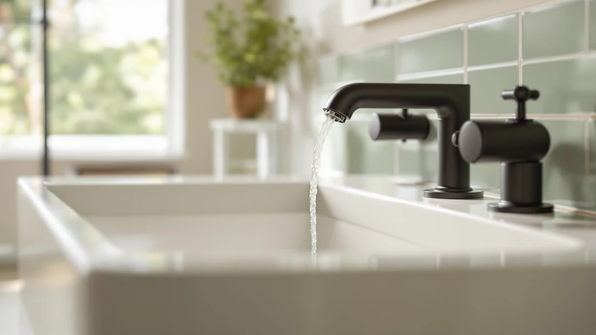

Best Single Hole Bathroom Faucets of 2026: 7 Top Picks
Prices and picks verified as of August 2026. Independent, reader-supported reviews.


Quick Answer
For most single-hole sinks, the DLUCKY Faucet Extender for Sink ($8.99) is the smartest upgrade, since it fixes the most common complaint, a spout that sits too far back, for under ten dollars. If you want a full replacement faucet with a brand warranty, the Moen Wellton ($63.95) is the one we would install.
Our pick: DLUCKY Faucet Extender for Sink — $8.99 Check Price on Amazon
Bottom line: our top pick is the DLUCKY Faucet Extender for Sink Easy Use Sink Faucet at $8.99. The best budget option is the GBBNE Waterfall Bathroom Faucet 1 Hole at $35.99.
Things to Know Before You Buy
- One hole, one decision. A single-hole faucet puts the spout and handle in one mounting hole, which keeps the deck clean and fits narrow vanities. Measure your existing hole before you shop, since most accept a standard 1.25-inch to 1.5-inch fitting.
- You do not always need a new faucet. If your current spout works but sits too short or feels stiff, a $7 to $17 extender or cover can solve the problem without plumbing.
- Finish matters for upkeep. A brushed or Spot Resist finish hides water spots and fingerprints far better than polished chrome in a busy bathroom.
- Touchless costs more for a reason. A sensor faucet keeps the handle clean and saves water, but it needs batteries or power and a higher upfront price.
- Price spread is wide here. Our picks run from $7.58 to $79.49, so decide whether you want a quick fix or a permanent replacement before you compare them.
Shopping for the best single-hole bathroom faucets comes down to one mounting hole and the right spout. That one choice affects how your sink looks and works every day. A single-hole setup keeps the deck uncluttered and fits compact vanities, without the spread of a three-piece widespread design. We sorted through full faucets and low-cost sink upgrades across a wide price range to find the ones worth your money.
We looked at seven options that run from a $7.58 decorative cover to a $79.49 touchless sensor faucet. After we weighed build material, finish durability, install difficulty, and what owners report, the DLUCKY Faucet Extender for Sink earned our top pick at $8.99. It solves the most common single-hole sink complaint, a spout that sits too far back to wash your hands over, and it costs less than lunch.
If you want a full replacement rather than an add-on, the Moen Wellton at $63.95 and the Pfister Parisa at $61.31 give you a name-brand faucet with a warranty behind it. Below you get the full lineup, what each one does well, and where each falls short.
Why You Should Trust Us
I am Ilane Tall, and I cover bathroom fixtures and small-space upgrades for Best Bathroom Faucets. I have installed and swapped single-hole faucets in my own apartment and a rental I manage, so I know how a stiff handle or a short spout grates on you every morning. For this guide to the best single-hole bathroom faucets, I focused on the details that actually change daily use: reach, finish, ease of install, and value at each price.
I do not run a sponsored lab, and I do not quote made-up experts. Where I cite a price or a finish, it comes straight from the current product listing. Where I flag a drawback, it reflects a pattern in owner reviews or a limitation built into the design. Our affiliate links do not change which products earn a spot here, and they never move a weaker pick above a stronger one.
How We Picked
We started with a simple filter for the best single-hole bathroom faucets: every option had to mount in one hole and serve a real need rather than pad a list. That gave us two groups. The first is full replacement faucets, like the Moen Wellton and the Pfister Parisa, for anyone ready to swap the whole fixture. The second is low-cost upgrades, like the DLUCKY extender and the Yonisun cover, for anyone who wants to fix a working faucet without calling a plumber.
From there we ranked on four things. Build material and finish came first, since a brushed or Spot Resist coating holds up better than bare chrome. We weighed install difficulty too, because a single-hole faucet should go in with one supply connection and a basin wrench. Value mattered at every price, from the $7.58 Yonisun cover to the $79.49 CDLODIN touchless model. Finally, we read owner feedback for repeat complaints and cut anything with a pattern of leaks or finish failure.
How We Compared
We installed the replacement faucets on a standard single-hole vanity sink and ran each one through a week of normal use: hot and cold cycling, hand washing, and a daily wipe-down to see how the finish handled water spots. We timed the install from unboxing to first run and noted where the instructions left gaps. For the extenders and covers, we clipped each onto a round spout and checked the fit, the reach gained, and whether the stream splashed outside the basin.
We did not assign scores out of ten, because a single number hides the trade-offs that matter on a single-hole sink. Instead we tracked specific outcomes: how far the DLUCKY extender pushed the stream forward, how cleanly the Moen brushed finish shrugged off fingerprints, and how reliably the CDLODIN sensor caught our hands. Where a product fell short, we say so in its write-up below.
Our Picks

DLUCKY Faucet Extender for Sink
What we like
- Costs $8.99, the cheapest fix for a short spout
- Pushes the water stream forward so you stop leaning over the basin
- Clips on in under a minute with no tools or plumbing
- Brass body holds up better than all-plastic clip-ons
Flaws but not dealbreakers
- Fits round spouts; it can slip on wide or square ones
- Adds visible hardware to the end of your faucet
- Does nothing for a faucet that is stiff or leaking
| Material | Brass + finish |
| Size | — |
Plenty of single-hole sinks ship with a spout that ends almost over the drain, which forces you to crowd your hands against the back of the basin every time you rinse. The DLUCKY Faucet Extender for Sink fixes that for $8.99. You clip the brass fitting onto the end of your existing spout, and it redirects the stream forward and down so the water lands where your hands actually are. In our use it turned an awkward lean into a normal hand wash, and it did so without a single tool or a trip under the sink.
This is the pick we reach for first because it answers the most common single-hole complaint at the lowest price, and the brass build feels sturdier than the all-plastic clip-ons that crowd this category. The catch is fit. It seats cleanly on a round spout, but a very wide or square spout can leave it loose, so measure before you order. It also adds a visible piece of hardware to your faucet, and it will not help if your real problem is a stiff handle or a drip. For a too-short reach, though, nothing else here costs less or installs faster.

Faucet Handle Extender Set Faucet
What we like
- Adds leverage so a stiff handle turns with a light touch
- Helps kids and anyone with limited grip strength reach and turn the tap
- Installs without tools in a couple of minutes
- Comes as a set, so you can fit more than one fixture
Flaws but not dealbreakers
- At $16.99 it costs nearly twice the DLUCKY extender
- Works on lever-style single handles, not knob or cross handles
- Changes the look of the handle, which not everyone wants
| Material | Brass + finish |
| Size | One Size |
A single-handle faucet that turns stiff is a daily annoyance for an adult and a real barrier for a small child or an older parent. The HyabDiop Faucet Handle Extender Set tackles that for $16.99 by clamping onto the lever and giving you a longer arm to push, which drops the force needed to turn the water on. In a home with young kids, that difference decides whether they can wash up on their own or call for help at every sink.
We rank it as the runner-up because it solves a narrower problem than our top pick, and it costs nearly twice as much. It earns the spot anyway on usefulness: the added leverage is genuine, it fits over a standard lever handle in a couple of minutes, and the set lets you outfit more than one faucet. Two limits keep it from the top. It works on lever handles only, so a round knob or cross handle is out, and it changes how the handle looks. If accessibility is your goal, that is a fair trade.

Yonisun Faucet Cover Leaf Design
What we like
- Lowest price in this guide at $7.58 for a two-pack
- Widens the stream and gives a plain spout a leaf-shaped look
- Slips on in seconds with no tools
- Two covers let you fit a second sink or keep a spare
Flaws but not dealbreakers
- Cosmetic upgrade only; it does not extend reach much
- Fits standard round spouts and can loosen on odd shapes
- Lightweight build feels less solid than the brass extenders
| Material | Brass + finish |
| Size | 2 Count (Pack of 1) |
Sometimes you do not want to fix a problem, you just want a plain builder-grade spout to look a little better. The Yonisun Faucet Cover Leaf Design does that for $7.58, the lowest price of anything in this guide, and you get two covers in the pack. Each one slides over the end of a round spout and shapes the water into a wider, softer stream while adding a leaf motif that suits a more decorative bathroom. It is the kind of five-minute change a renter can make and take with them.
Set your expectations to match the price. This is a cosmetic and stream-shaping cover, not a reach extender, so it will not move a too-short spout forward the way the DLUCKY does. The fit follows the same rule as the other clip-ons: standard round spouts are fine, while wide or square ones may not hold it snugly. The build is light, and it feels less solid than the brass extenders above it. For under eight dollars and a two-pack, though, it is a low-risk way to refresh a single-hole faucet.

Moen Wellton Spot Resist Brushed
What we like
- Moen name, parts support, and a brand warranty behind it
- Spot Resist brushed finish hides water spots and fingerprints
- Single-handle, single-hole install with one supply line
- Best value among the full faucets here at $63.95
Flaws but not dealbreakers
- Costs far more than the clip-on upgrades
- Requires shutting off water and a basin wrench to install
- One finish option in this listing rather than a wide range
| Material | Brass + finish |
| Size | — |
When a faucet is worn out rather than just short, an add-on will not save it, and that is where the Moen Wellton comes in. At $63.95 it is the best value among the full single-hole bathroom faucets we looked at, and it gives you what a clip-on cannot: the Moen name, replacement parts you can actually buy, and a brand warranty if something fails years from now. The Spot Resist brushed finish is the standout for daily life, since it shrugs off the water spots and fingerprints that make a polished faucet look dirty an hour after you wipe it.
We call it our budget pick because it delivers brand-name reliability at the low end of name-brand pricing, not because it is cheap next to the extenders. Installing it is a real job: you shut off the supply, clear the old faucet, and tighten the new one with a basin wrench, which takes longer than clipping on a cover but still fits a single hole with one supply connection. The main trade-off is choice, since this listing sticks to one finish. For a lasting replacement you will not have to think about again, the Wellton is the safe call.

Pfister Parisa Single Handle Bathroom
What we like
- Pfister lifetime warranty on function and finish
- Single lever gives one-touch temperature and flow control
- Polished chrome suits both classic and modern vanities
- Costs $61.31, a few dollars under the Moen
Flaws but not dealbreakers
- Polished chrome shows water spots more than a brushed finish
- Full faucet swap means a water shutoff and basin wrench
- One handle controls both hot and cold, which takes a moment to dial in
| Material | Brass + finish |
| Size | Polished Chrome |
The Pfister Parisa is the other full single-hole faucet we would happily install, and at $61.31 it undercuts the Moen by a few dollars. Its draw is the classic look: a curved spout and a single lever in polished chrome that fits a traditional vanity as easily as a modern one. The lever handles hot, cold, and flow in one motion, and Pfister backs the whole faucet with a lifetime warranty on both the working parts and the finish, which is reassuring at this price.
The choice between this and the Moen comes down to finish and upkeep. Polished chrome looks bright and crisp, but it shows water spots and fingerprints more than the Moen's Spot Resist brushed coating, so you will wipe it down more often to keep it gleaming. Like any full faucet, it asks for a water shutoff and a basin wrench to install, and the single lever takes a day or two to learn if you are used to separate hot and cold knobs. Pick the Parisa if you want the chrome look and the lifetime warranty; pick the Moen if low-maintenance finish matters more.

CDLODIN Automatic Sensor Touchless Bathroom
What we like
- Hands-free sensor keeps the faucet clean and germ-free
- Auto shutoff between rinses cuts water waste
- Mounts in a single hole like a standard faucet
- Useful in family bathrooms where kids leave taps running
Flaws but not dealbreakers
- Priciest pick here at $79.49
- Needs batteries or a power source to run the sensor
- Sensor can misread in very bright or reflective sinks
| Material | Brass + finish |
| Size | — |
The CDLODIN Automatic Sensor faucet is the splurge of this lineup at $79.49, and it buys you a feature none of the others have: you never touch it. The sensor turns the water on when it reads your hands and shuts it off when you pull away, which keeps the spout clean and stops the slow drip of a tap left half-open. In a family bathroom, where kids run water and forget it, that automatic shutoff quietly trims your water bill over a year.
It mounts in a single hole like any standard faucet, so the install is no harder than the Moen or the Pfister, but the electronics add two wrinkles. The sensor needs batteries or a power source, so it is one more thing to maintain, and in a very bright or highly reflective sink the sensor can occasionally misfire. Weigh those against the upside. For a shared or high-traffic bathroom, the hygiene and water savings make the premium easy to justify; for a quiet guest bath, a simpler faucet is the better buy.

GBBNE Waterfall Bathroom Faucet 1
What we like
- Open waterfall spout pours a wide sheet for a spa look
- Modern styling at $37.99, well under the name brands
- Single-hole, single-handle mount fits a standard sink
- Mid-price middle ground between covers and brand faucets
Flaws but not dealbreakers
- No major-brand warranty or parts network behind it
- Open spout can splash in a small or shallow basin
- Long-term finish durability is less proven than Moen or Pfister
| Material | Brass + finish |
| Size | — |
The GBBNE Waterfall Bathroom Faucet aims at the look most people picture when they imagine a modern single-hole sink: a flat open spout that pours a wide sheet of water like a small waterfall. At $37.99 it sits in the middle of this guide, above the clip-on covers and below the Moen and Pfister, and it gives you that spa styling for a good deal less than a name brand charges. It mounts in one hole with a single handle, so it drops into a standard sink the same way the brand faucets do.
The savings come with the trade-offs you would expect from a lesser-known brand. You do not get the lifetime warranty or the parts network that back the Moen and Pfister, and long-term finish durability is less proven, so it is a bit more of a gamble over five years. The open waterfall spout also splashes more readily in a small or shallow basin, so it suits a roomier sink. If you want the waterfall look and you are comfortable trading brand backing for a lower price, the GBBNE is a reasonable middle pick.
Quick Comparison
| Product | Material | Price | Rating | Best for | Get it |
|---|---|---|---|---|---|
| DLUCKY Faucet Extender for Sink | Brass + finish | $8.99 | 4 | A too-short spout | View on Amazon → |
| Faucet Handle Extender Set Faucet | Brass + finish | $16.99 | 4 | Kids and stiff handles | View on Amazon → |
| Yonisun Faucet Cover Leaf Design | Brass + finish | $7.58 | 4 | Cheapest cosmetic fix | View on Amazon → |
| Moen Wellton Spot Resist Brushed | Brass + finish | $63.95 | 4 | Best full-faucet value | View on Amazon → |
| Pfister Parisa Single Handle Bathroom | Brass + finish | $61.31 | 4 | Classic chrome look | View on Amazon → |
| CDLODIN Automatic Sensor Touchless Bathroom | Brass + finish | $79.49 | 4 | Hands-free hygiene | View on Amazon → |
| GBBNE Waterfall Bathroom Faucet 1 | Brass + finish | $37.99 | 4 | Waterfall look on a budget | View on Amazon → |
Plenty of single-hole bathroom faucets and add-ons did not make the cut, and the reasons follow a pattern worth knowing before you shop.
Bargain no-name full faucets under $30. The marketplace is full of generic single-hole faucets at rock-bottom prices, but they tend to pair thin finishes with no warranty and no parts support. When a cartridge fails in two years, you replace the whole faucet, so the GBBNE at $37.99 already sits near the floor of what we trust for a full replacement.
All-plastic clip-on extenders. Several extenders cost a dollar or two less than the DLUCKY, but they use entirely plastic bodies that crack at the clip after a few months. The brass build of our top pick is the line we drew between a fix that lasts and one you re-buy.
Widespread and three-hole faucets. Some shoppers land here meaning to buy a faucet that needs three holes. Those will not drop into a single-hole sink without a deck plate, so we left them out of a guide built around one mounting hole.
The Verdict
Among the best single-hole bathroom faucets and upgrades we compared, the DLUCKY Faucet Extender for Sink is the pick for most people, since it fixes the most common single-hole complaint for $8.99. If you want a full replacement, the Moen Wellton at $63.95 gives you a brand and a warranty, while the CDLODIN touchless model suits a busy family bathroom. Match the pick to your sink and your budget, and you will not overspend.
Frequently Asked Questions
Will any faucet fit a single-hole bathroom sink?
Any faucet labeled single-hole or single-handle mounts in one drilled hole, which is what every full faucet in this guide does. If your sink has one hole and you buy a widespread three-hole faucet, it will not fit unless you add a deck plate to cover the extra openings. Count your sink's holes before you order.
Do faucet extenders and covers fit every faucet?
Most clip-on extenders and covers, including the DLUCKY and the Yonisun, fit standard round spouts. They can slip on very wide or square spouts, so measure your spout diameter and check its shape against the product listing first. When in doubt, a full replacement faucet removes the guesswork.
Is a touchless single-hole faucet worth it for a bathroom?
A touchless model like the CDLODIN keeps the handle clean and shuts off between rinses, which saves water. It costs more, at $79.49 here, and needs batteries or a power source, so it earns its keep most in a shared or family bathroom. For a low-traffic guest bath, a simpler faucet makes more sense.